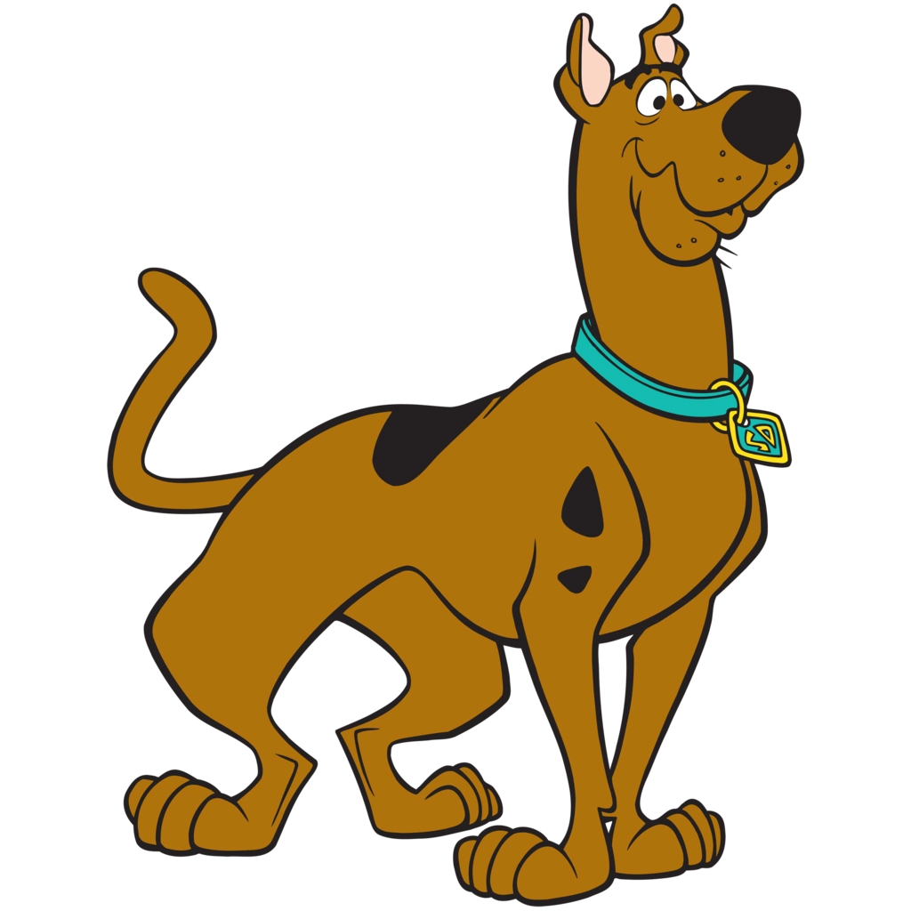
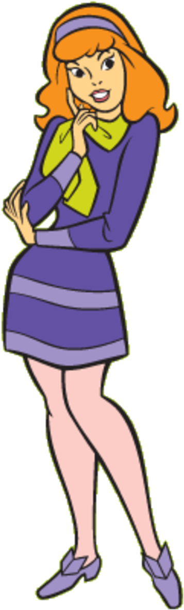
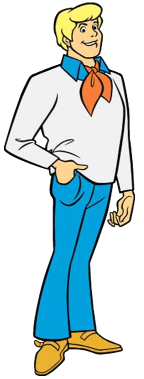

Scooby-Doo
|
Shaggy
|
Daphne
|
Fred
|
Velma
Menu
Home
About
Tableau
Scooby-Doo
and the Mystery Solving Gang
Scoobert "Scooby" Doo

Scooby-Doo is the eponymous character and protagonist of the animated television franchise of the same name, created in 1969 by the American animation company Hanna-Barbera. He is a male Great Dane and lifelong companion of amateur detective Shaggy Rogers, with whom he shares many personality traits. He features a mix of both canine and human behaviors (reminiscent of other talking animals in Hanna-Barbera's series), and is treated by his friends more or less as an equal. He speaks in a slurred, dog-like voice. His catchphrase is "Scooby-Dooby-Doo!"
Education
Attended highschool
Attended obedience school
Work Experience
Farm work
Sales rep for Fruitmeir's Desserts
Skills
Great swimmer
Easy to get along with
Huge appetite
Read more by clicking the text above, or
here
to learn more
Norville "Shaggy" Rogers
Norville "Shaggy" Rogers, is a fictional character and one of 4 human protagonists in the Scooby-Doo franchise. He is generally depicted as a detective and cowardly slacker, and the long-time best friend of his equally cowardly dog, Scooby-Doo. Like his dog Scooby, Shaggy is readily bribed with Scooby Snacks due to his large appetite. Shaggy becomes extremely scared when faced with monsters or other frightening situations.
Education
Highschool Graduate
Briefly attended a military academy
Some college experience
Work Experience
Construction worker
Gym teacher
Skills
Culinary skills
Evaluating the risk level
Huge appetite
Read more by clicking the text above, or
here
to learn more
Daphne Blake

Daphne the enthusiastic and very beautiful, but clumsy and danger-prone member of the gang, who always follows her intuition. She serves as the damsel in distress and would occasionally get kidnapped, tied up, gagged and left imprisoned. Scooby and Shaggy usually save her, but sometimes Fred and Velma do it. But as the franchise went on, she became a stronger, more independent character who can take care of herself.
Education
Highschool graduate
University graduate
Work Experience
News reporter/Host
Author
Skills
Martial Arts
Motivational
Pilot experience
Read more by clicking the text above, or
here
to learn more
Fred Jones

Fred Jones is a fictional character in the American animated series Scooby-Doo, about a quartet of teenage mystery solvers and their Great Dane companion, Scooby-Doo. Fred has been primarily portrayed by voice actor Frank Welker since the character's inception in 1969. He is often shown constructing various Rube Goldberg traps for villains, which Scooby-Doo or Shaggy often set off by mistake, causing the villain to be captured in another way. Fred usually takes the lead in solving mysteries.
Education
Highschool graduate
University experience
Work Experience
Private investigator
Movie Extra
Carnival Owner
Skills
Leadership skills
Traps
Creative
Read more by clicking the text above, or
here
to learn more
Velma Dinkley
Velma Dinkley is a fictional character in the Scooby-Doo franchise. She is usually seen wearing a baggy orange turtleneck sweater, a short red pleated skirt, knee socks, Mary Jane shoes, and a pair of black square glasses, which she frequently loses. She is seen as the "brains" of the group.
Education
Highschool Graduate
University Graduate
Work Experience
Librarian
Scientist
Information Technology
Skills
Deductive skilss
Computer Coding
Hardworking
Read more by clicking the text above, or
here
to learn more
Back to Top of Page